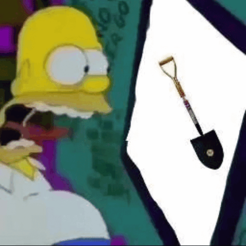
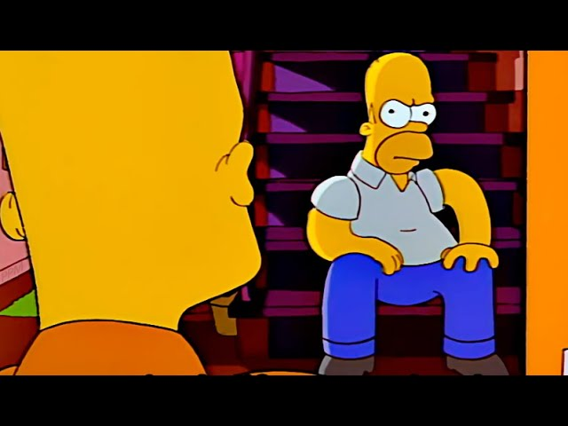

Homero Simpson es un personaje ficticio de la serie animada "Los Simpson". Es el padre de la familia Simpson y trabaja en la planta nuclear de Springfield. Es conocido por su amor por la comida, su trabajo en la planta nuclear y su tendencia a cometer errores.

Homero y la familia Simpson fuerono creados por Matt Groening en 1987. Fueron creados como una parodia de las familias estadounidenses típicas y para romper la ilusión de la vida familiar perfecta que presentaban los programas de televisión de la época.

¡Mmm... donas!